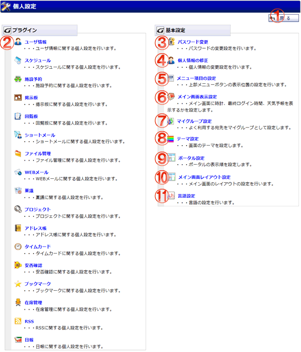

メイン画面の項目表示･非表示の設定や、個人情報の修正、マイグループの登録などを行うことが出来ます。

機能説明
戻るボタン遷移元の画面へ遷移します。 |
プラグイン個人設定各プラグインの個人設定画面へ遷移します。 |
|---|---|
パスワード変更パスワード変更画面へ遷移します。パスワードの変更設定を行います。 |
個人情報の修正個人情報の修正画面へ遷移します。個人情報の変更設定を行います。 |
メニュー項目の設定メニュー項目の設定画面へ遷移します。上部メニューボタンの表示位置の設定を行います。 |
メイン画面表示設定メイン画面表示設定画面へ遷移します。メイン画面に時計、最終ログイン時間を表示するかを設定します。 |
マイグループ設定マイグループ設定画面へ遷移します。よく利用する宛先をマイグループとして登録できます。 |
テーマ設定テーマ設定画面へ遷移します。GroupSession全体の表示テーマを設定します。 |
ポータル設定個人ポータル管理画面へ遷移します。ータルの表示順を設定します。 |
メイン画面レイアウト設定メイン画面レイアウト設定画面へ遷移します。メイン画面のレイアウトの設定を行います。 |
言語設定言語設定画面へ遷移します。GroupSession全体の表示言語の設定を行います。 |